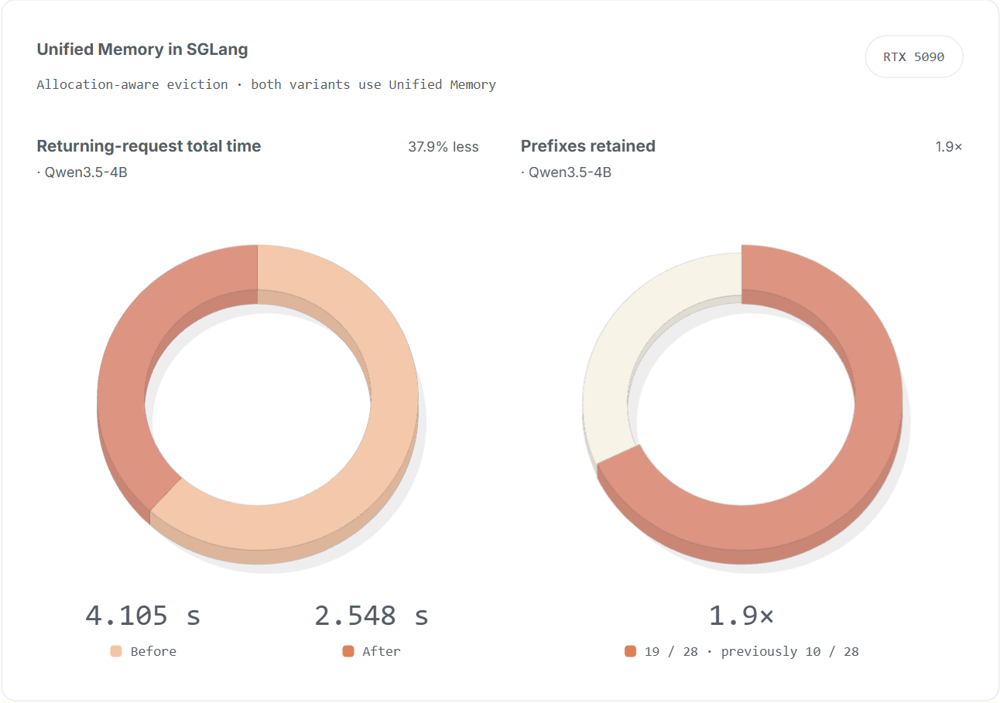
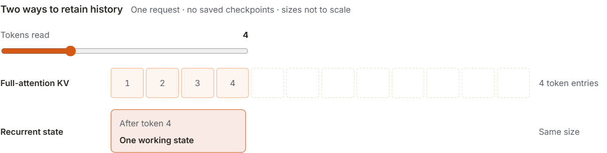
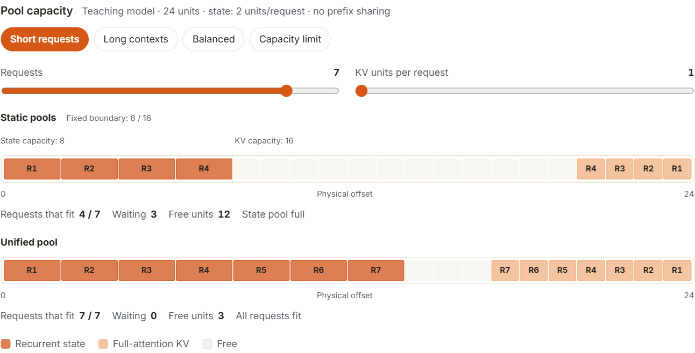
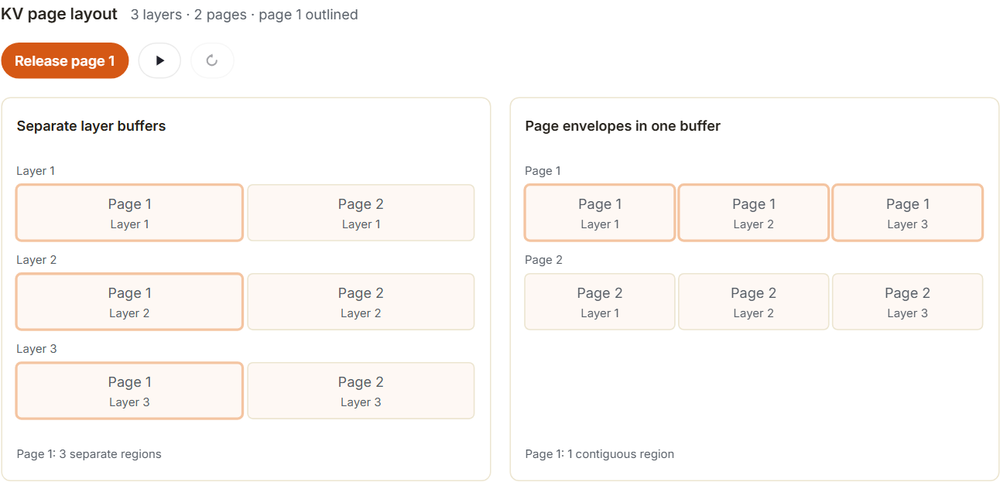
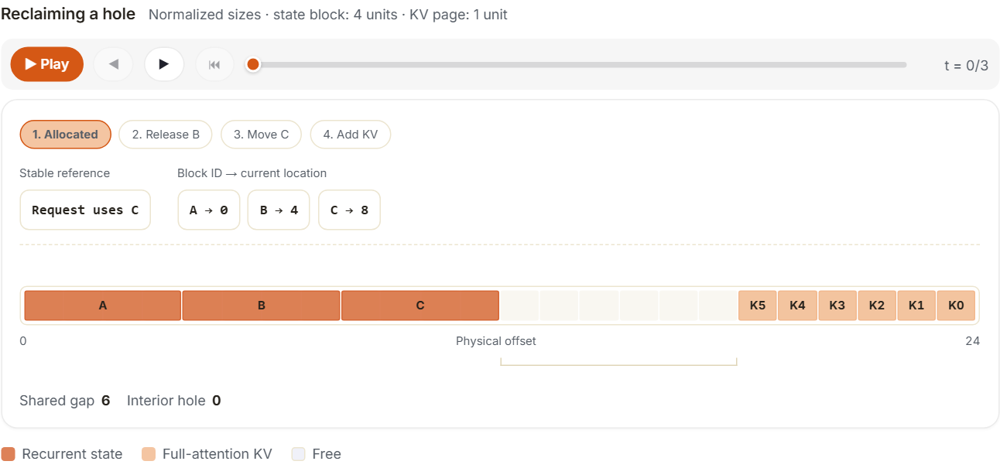
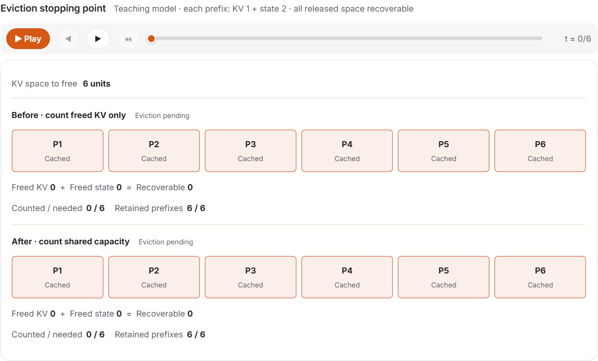
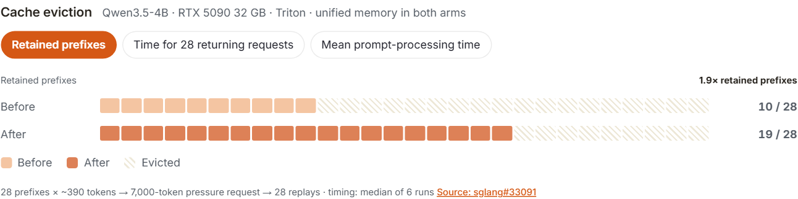

为了支持现代混合注意力模型，SGLang 保存每个 token 的 KV（用于完全注意力）和循环状态（用于 Mamba 层）。为每个 GPU 分配固定份额的 GPU 内存，可以填满其中一个，而另一个仍有空间，从而使内存未使用。统一内存让两者共享一个缓冲区并根据需求变化分配空间。本文解释了 SGLang 如何实现这一点以及基于它的优化。在缓存压力实验中，淘汰改进保留了 1.9 倍的前缀，并将回访请求的总耗时降低了 37.9%。
先决条件：阅读 Unified Radix Cache 。

背景
在推理过程中，模型会保存键和值（或 KV），以供生成答案时使用。 KV 缓存就是保存这个 KV 的容器。现代混合模型具有不同类型的注意力层，它们以不同的方式保存这段历史：
- 全注意力层保留每个 token 的键和值。 读取更多 token 会增加更多 KV。生成时，attention读取这个 KV 来回顾文档。
- 循环层更新固定大小的状态。 每个新 token都会写入该状态，覆盖其早期内容：内容发生变化，但状态不会增长。由于这种覆盖，只有当状态保存在完全相同的位置时才可以重用；否则它所保存的历史就已经被覆盖了。每个活动请求都需要其自己的工作状态。保留该状态的副本以供以后重用（称为检查点）需要另一个状态槽。
该图遵循一个请求。随着上下文的增长，KV 会累积，而循环状态会就地更新。混合模型需要两者继续生成。
查看静态备用图

这会产生尺寸问题。许多短请求需要许多状态槽，但每个请求需要很少的 KV。一些长请求需要更少的工作状态，但需要更多的 KV。如果 SGLang 在启动时为每种类型保留固定数量的内存，则一个池可能已满，而另一个池仍有未使用的空间，因此没有固定的分割可以处理这两种情况。
统一内存
共享未使用的空间
SGLang 的统一内存将两种数据放入一个 GPU 缓冲区。循环状态从一端生长； KV 是从对方增长的。任何一方都可以从它们之间的空闲区域获取字节。总缓冲区大小保持不变，而每种类型的可用容量随需求而变化。
假设缓冲区有 24 个单元。每个请求需要 2 个单位的循环状态和 1 个单位的 KV。状态单元固定为 8 个，KV 单元固定为 16 个，仅允许四个请求：状态池已满，即使有 12 个 KV 单元未使用。共享池使用 21 个单元满足示例中的所有七个请求。
查看静态备用图

长上下文可能会导致相反的问题：KV 耗尽，而状态容量闲置。选择“长上下文”来查看该案例。当固定分割受到限制时，共享会有所帮助。当组合数据填满整个缓冲区时，请求仍然必须等待，或者必须逐出缓存的数据。
这里，“统一内存”是指同一 GPU 上的 SGLang 缓存之间共享容量。它不会将数据移动到 CPU 内存。HiCache 负责另一项任务：将缓存历史保存在 CPU 内存或外部存储中，并在需要时重新加载。
将数据打包到可移动块中
共享缓冲区是 GPU 内存的一个连续范围。分配器从其两端分配空间。它还必须将释放的空间返回到中间的自由区域，如下所示，它有时会移动方块来关闭洞。所有这一切都要求它管理的每个块占据一个连续的范围。
默认情况下，KV 并不是这样存储的。SGLang 按页分配 KV，每个页面容纳多个 token，每个全注意力层都为这些 token 保留自己的 KV。通常每一层都有单独的缓冲区，因此一个页面会按层拆成若干块，分布在不同缓冲区中。释放页面会在每层缓冲区中留下一个小孔，导致空闲空间分散。
因此，统一内存切换到以页为主的布局。一页的所有层的 KV 并排位于一个连续的块中，称为 页面信封。页面中的数据不变；只是它在内存中的位置不同。现在释放页面会释放一个连续的范围，该范围可以返回到共享的空闲区域。移动页面会复制一个块，而不是每层复制一个块。
这种不同的布局会产生成本：
- 内核必须通过跨步视图将每一层读取到信封中，因此统一内存目前仅支持一些注意力后端，并且需要相同大小的 K 和 V 头。
- 每次前向传递必须首先将虚拟 ID 转换为物理位置。
测量的开销包含在最后的结果中。
该图比较了使用三层和两个页面的两种布局。
查看静态备用图

循环状态块类似地保存循环层所需的状态。 KV 页和状态块保持自己的大小。两者都从同一个缓冲区中进行绘制，因此释放一个大的状态块可以为几个较小的 KV 页腾出空间。
在运行时整合释放的空间
在统一内存中，释放的块可能位于两个活动块之间。图中，状态块A、B和C占据左端。释放 B 会留下一个空洞，但 C 仍然将该空洞与共享空闲区域分开，因此释放的空间无法完全使用。因此，SGLang 将 C 移动到 B 的旧位置。然后，C 的旧空间加入空闲区域，可以在其中分配新的 KV 页。
请求在移动后仍然需要找到C。 SGLang 为 C 提供了一个稳定的虚拟 ID 并保留了其当前位置的表。请求继续引用C；该表从“C is at 8”更改为“C is at 4”。移动数据不需要重写每个引用它的请求。
查看静态备用图

这个过程称为压缩。当分配需要空间时，SGLang 可以暂时留下一个洞并进行压缩。移动数据必须等到安全为止：GPU 计算或网络传输仍在使用的数据不能在操作过程中移动。
共享池实现 引入了这种分配和映射机制。 后来的扩展 让三种类型共享缓冲区：全注意力 KV、滑动窗口 KV 和循环状态。滑动窗口层只需要最近的token窗口；他们的容量需求可能与其他池不同。
统一内存中的淘汰策略
请求完成后，SGLang 可以保留文档的 KV 和请求结束时的循环状态检查点。当另一个请求以完全相同的token前缀开始时，它可以重用已保存的历史记录并仅计算新的后缀。当内存有限时，逐出缓存的前缀会立即释放空间，但稍后的请求可能必须再次计算它。
对于共享内存，淘汰决策必须计算它可以回收的所有容量。假设一个新的分配需要6个单位的 KV 空间。淘汰一个缓存的前缀会释放 1 个单位的 KV 和一个 2 个单位的状态检查点。经过两次淘汰和任何所需的压缩后，(1 + 2) × 2 = 6 个单位可用。仅计算 2 KV 单元将使 SGLang 不断删除前缀，即使分配已经适合。
查看静态备用图

SGLang 的淘汰改进 在每次淘汰后检查共享分配器是否可以满足挂起的分配。一旦可以，淘汰就会停止。该检查包括可从其他池恢复的空间，因此可以保留缓存更有用的前缀。
结果
下面的实验首先缓存了28个不同的前缀，然后发送一个不相关的长请求来造成内存压力。最后，它再次发送原始前缀。幸存的前缀可以节省重复的提示计算；被淘汰的人必须重新计算。
两种变体都已使用统一内存。 当分配驱动的淘汰停止时，比较会发生变化。通过改进的规则，更多的前缀可以生存，并且 28 个回访请求可以更快完成。
查看静态备用图

这个收益有一个前提：单次分配必须足够大。在实验中，7,000 个 token 的请求一次性分配了全部 KV。当请求被拆成四个 2,048 个 token 的块时，新旧规则得到相同结果，均保留 17 个前缀。总体吞吐量没有出现稳定变化。
统一内存也有成本：位置表、压缩期间的块副本以及前面描述的布局成本。在五个模型 中，输出token之间的中位时间范围从快 0.81% 到慢 1.32%。好处是更好地利用内存，而不是更快的计算。
进一步阅读
- LMSYS 博客：SGLang 和 Miles 为 Kimi K3 添加 Day-0 支持
- SGLang 食谱：Kimi K3
- sglang#29678：feat(mem_cache)：混合 Mamba / SWA 模型的统一内存池
- sglang#33091: [统一内存] 当共享分配容量足够时停止淘汰
- sglang#35177：壮举（统一内存）：mamba + 混合 SWA 模型的三个子池
可视化教程由YichiZhang和 SGLang 团队编写。